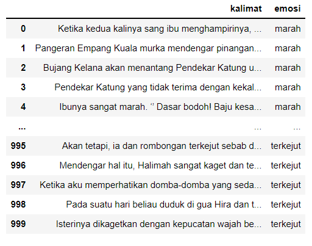
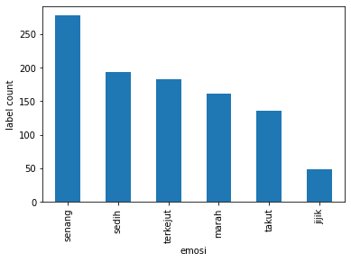
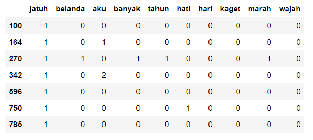
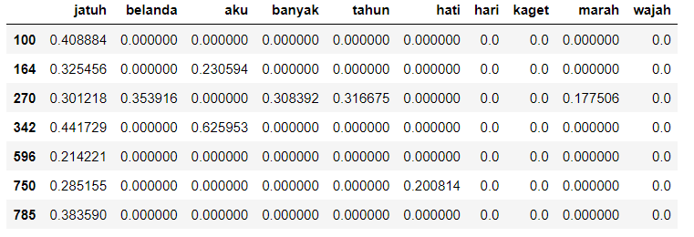

Sentence Emotion Detection
Given a dataset of an Indonesiain short story, this projects aims to create a model that could determine the emotion of a sentence based on the dataset using classification algorithm.
Methodology

The data firstly pre-processed using regex, word steming and stop words. Then, the bag-of-words and TF-IDF were created as the input for the model. There were 2 models created using the same algorithm, one using Bag-of-Words and the other using TF-IDF.
- Dataset: 1000 rows (sentences) with labelled emotion
- Model: Multinomial Naive-Bayes using Bag-of-Words and TF-IDF
- Data Splitting: train data 80% and test data 20%
Data Exploration
It is essential to take a look at the dataset and discover label proportoin within the dataset as shown below
 There are 6 emotions contained in the dataset, which are:
- Happy (senang)
- Sad (sedih)
- Surprised (terkejut)
- Angry (marah)
- Scared (takut)
- Disgusted (jijik)
Data Pre-processing
The sentences are preprocessed by:
- Removing digits
- Word stemming
- Removing stop Words
Using regex function to remove digits
Before:'Jatuhnya Jayakarta ke tangan Kompeni Belanda pada tahun 1619 membuat banyak ulama marah.'
After: 'Jatuhnya Jayakarta ke tangan Kompeni Belanda pada tahun membuat banyak ulama marah.'
Using Indonesian corpus in Sastrawi library to take the word stem
Before:'Jatuhnya Jayakarta ke tangan Kompeni Belanda pada tahun membuat banyak ulama marah.'
After: 'jatuh jayakarta ke tangan kompeni belanda pada tahun buat banyak ulama marah'
Using Indonesian corpus in Sastrawi library to remove the stop words
Stopwords in Indonesian includes: 'yang', 'untuk', 'pada', 'ke', 'para', 'namun'
Feature Extraction
- Bag-of-Words 
- TF-IDF 
Model Training
The model used is Multinomial Naive Bayes and laplace smoothing is applied to the model.
- Overally, the model accuracy using Bag-of-words achieved higher accuracy
- Laplace helpls in improving the model accuracy as much as 10-11%
- Due to unequal label distribution, it causes the model to determine the most frequent label more accurate than the least frequent labels
Checkout the source code on Github